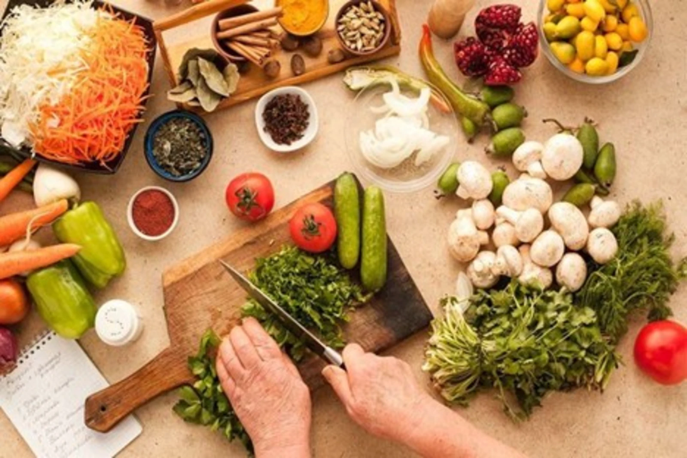
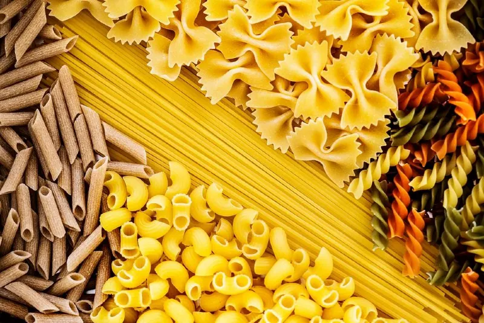

Featured: Master the Art of Mise en Place
Professional chefs swear by this simple habit: preparing and organizing ingredients before cooking. It reduces stress, speeds up cooking, and improves results — even for beginners.
Read More
Quick, practical kitchen tips to help you cook smarter, save time, and make meals taste better.

Professional chefs swear by this simple habit: preparing and organizing ingredients before cooking. It reduces stress, speeds up cooking, and improves results — even for beginners.
Read MoreChop, measure, and prepare everything before cooking — it keeps the process smooth and stress-free.
Read MoreAdding small amounts of salt and seasoning throughout cooking builds deeper, balanced flavor.
Read MoreSave a cup of pasta water — its starch helps sauces stick and creates a silky texture.
Read MoreFood needs space to brown properly — overcrowding traps steam and makes ingredients soggy.
Read MoreAllow cooked meat to rest for a few minutes so juices redistribute and stay inside.
Read MoreRice, beans, pasta, broth, and spices make it easy to cook last-minute meals without stress.
Read More